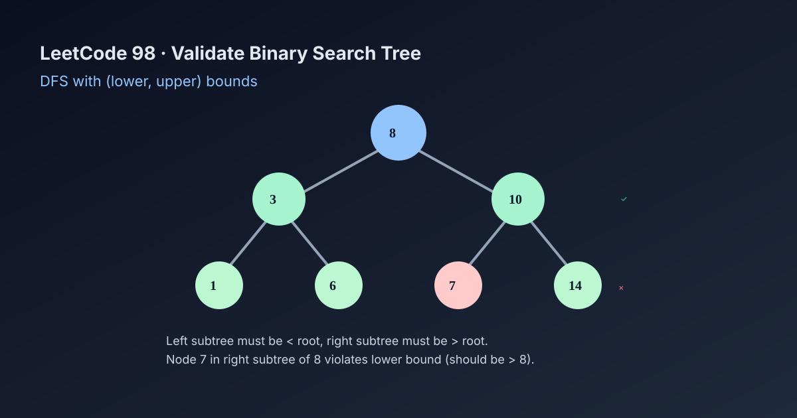

LeetCode 98: Validate Binary Search Tree (DFS Bounds)
LeetCode 98TreeDFSToday we solve LeetCode 98 - Validate Binary Search Tree.
Source: https://leetcode.com/problems/validate-binary-search-tree/

English
Problem Summary
Given the root of a binary tree, determine whether it is a valid Binary Search Tree (BST).
Key Insight
Checking only parent-child relation is not enough. Every node must satisfy a global valid range. During DFS, pass (lower, upper) bounds to each node and verify lower < node.val < upper.
Baseline and Why It Can Fail
A common wrong approach is: left child < parent and right child > parent. This misses deeper violations (for example, a node in right subtree smaller than root).
Optimal Algorithm (Step-by-Step)
1) Start DFS from root with range (-inf, +inf).
2) If node is null, return true.
3) If node value violates range, return false.
4) Recurse left with (lower, node.val), recurse right with (node.val, upper).
5) Return true only if both subtrees are valid.
Complexity Analysis
Time: O(n), each node visited once.
Space: O(h) recursion stack, where h is tree height.
Common Pitfalls
- Using <= / >= incorrectly for duplicates.
- Only checking immediate children, not full subtree constraints.
- Integer overflow when using finite sentinels instead of nullable bounds / wider types.
- Forgetting to propagate updated bounds into recursive calls.
Reference Implementations (Java / Go / C++ / Python / JavaScript)
/**
* Definition for a binary tree node.
* public class TreeNode {
* int val;
* TreeNode left;
* TreeNode right;
* TreeNode() {}
* TreeNode(int val) { this.val = val; }
* TreeNode(int val, TreeNode left, TreeNode right) {
* this.val = val;
* this.left = left;
* this.right = right;
* }
* }
*/
class Solution {
public boolean isValidBST(TreeNode root) {
return dfs(root, null, null);
}
private boolean dfs(TreeNode node, Long lower, Long upper) {
if (node == null) return true;
long v = node.val;
if (lower != null && v <= lower) return false;
if (upper != null && v >= upper) return false;
return dfs(node.left, lower, v) && dfs(node.right, v, upper);
}
}func isValidBST(root *TreeNode) bool {
var dfs func(node *TreeNode, lower, upper *int64) bool
dfs = func(node *TreeNode, lower, upper *int64) bool {
if node == nil {
return true
}
v := int64(node.Val)
if lower != nil && v <= *lower {
return false
}
if upper != nil && v >= *upper {
return false
}
return dfs(node.Left, lower, &v) && dfs(node.Right, &v, upper)
}
return dfs(root, nil, nil)
}class Solution {
public:
bool isValidBST(TreeNode* root) {
return dfs(root, nullptr, nullptr);
}
private:
bool dfs(TreeNode* node, long long* lower, long long* upper) {
if (!node) return true;
long long v = node->val;
if (lower && v <= *lower) return false;
if (upper && v >= *upper) return false;
return dfs(node->left, lower, &v) && dfs(node->right, &v, upper);
}
};class Solution:
def isValidBST(self, root: Optional[TreeNode]) -> bool:
def dfs(node: Optional[TreeNode], lower: Optional[int], upper: Optional[int]) -> bool:
if not node:
return True
v = node.val
if lower is not None and v <= lower:
return False
if upper is not None and v >= upper:
return False
return dfs(node.left, lower, v) and dfs(node.right, v, upper)
return dfs(root, None, None)var isValidBST = function(root) {
const dfs = (node, lower, upper) => {
if (!node) return true;
const v = node.val;
if (lower !== null && v <= lower) return false;
if (upper !== null && v >= upper) return false;
return dfs(node.left, lower, v) && dfs(node.right, v, upper);
};
return dfs(root, null, null);
};中文
题目概述
给定一棵二叉树的根节点，判断它是否是一棵合法的二叉搜索树（BST）。
核心思路
仅检查“左孩子小于父节点、右孩子大于父节点”是不够的。每个节点都要满足来自祖先传下来的全局区间约束。DFS 时携带 (lower, upper)，校验 lower < node.val < upper。
常见错误基线
只比较父子关系会漏掉深层违规节点（例如右子树里出现比根还小的值）。
最优算法（步骤）
1）从根开始，初始区间为 (-∞, +∞)。
2）节点为空返回 true。
3）若当前值不在区间内，直接 false。
4）递归左子树时更新上界为当前值；递归右子树时更新下界为当前值。
5）左右都合法才返回 true。
复杂度分析
时间复杂度：O(n)。
空间复杂度：O(h)（递归栈高度）。
常见陷阱
- 重复值边界判断写错（BST 严格不等）。
- 只看父子，不看整条祖先约束。
- 用 int 极值做哨兵导致边界溢出风险。
- 递归时没有正确传递新的上下界。
多语言参考实现（Java / Go / C++ / Python / JavaScript）
class Solution {
public boolean isValidBST(TreeNode root) {
return dfs(root, null, null);
}
private boolean dfs(TreeNode node, Long lower, Long upper) {
if (node == null) return true;
long v = node.val;
if (lower != null && v <= lower) return false;
if (upper != null && v >= upper) return false;
return dfs(node.left, lower, v) && dfs(node.right, v, upper);
}
}func isValidBST(root *TreeNode) bool {
var dfs func(node *TreeNode, lower, upper *int64) bool
dfs = func(node *TreeNode, lower, upper *int64) bool {
if node == nil {
return true
}
v := int64(node.Val)
if lower != nil && v <= *lower {
return false
}
if upper != nil && v >= *upper {
return false
}
return dfs(node.Left, lower, &v) && dfs(node.Right, &v, upper)
}
return dfs(root, nil, nil)
}class Solution {
public:
bool isValidBST(TreeNode* root) {
return dfs(root, nullptr, nullptr);
}
private:
bool dfs(TreeNode* node, long long* lower, long long* upper) {
if (!node) return true;
long long v = node->val;
if (lower && v <= *lower) return false;
if (upper && v >= *upper) return false;
return dfs(node->left, lower, &v) && dfs(node->right, &v, upper);
}
};class Solution:
def isValidBST(self, root: Optional[TreeNode]) -> bool:
def dfs(node: Optional[TreeNode], lower: Optional[int], upper: Optional[int]) -> bool:
if not node:
return True
v = node.val
if lower is not None and v <= lower:
return False
if upper is not None and v >= upper:
return False
return dfs(node.left, lower, v) and dfs(node.right, v, upper)
return dfs(root, None, None)var isValidBST = function(root) {
const dfs = (node, lower, upper) => {
if (!node) return true;
const v = node.val;
if (lower !== null && v <= lower) return false;
if (upper !== null && v >= upper) return false;
return dfs(node.left, lower, v) && dfs(node.right, v, upper);
};
return dfs(root, null, null);
};
Comments